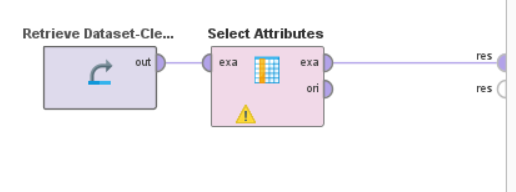
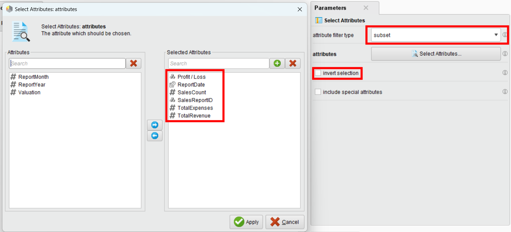
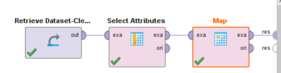
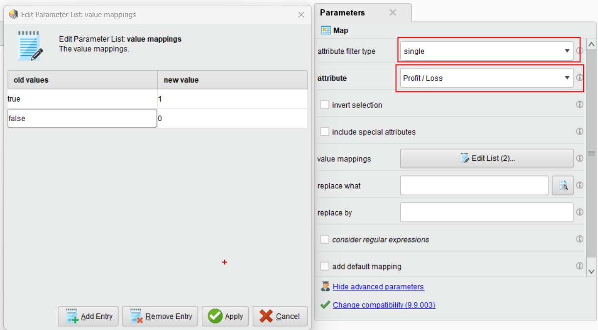
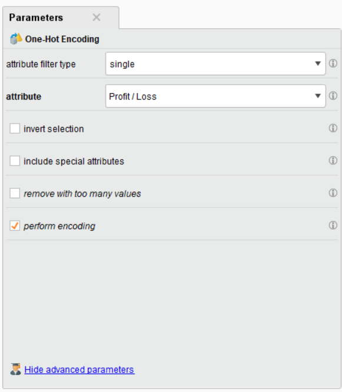
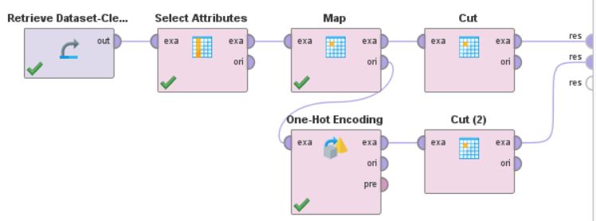
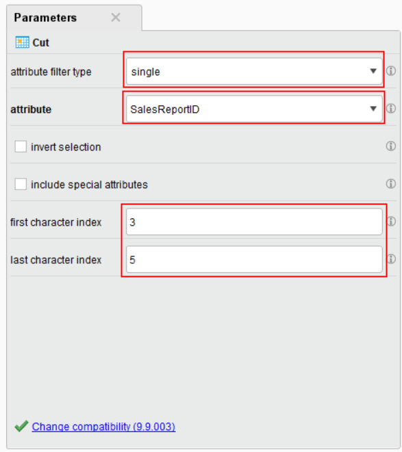
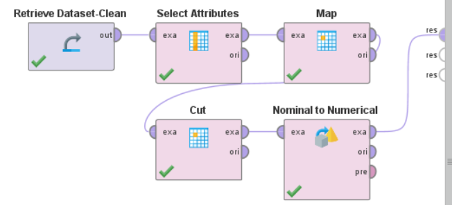
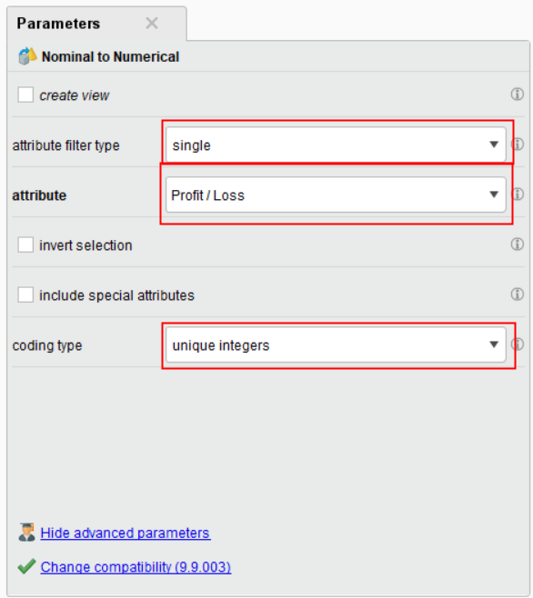

Data Transformation
Di session sebelumnya, kita sudah mempelajari mengenai bagaimana cara untuk mengolah data dari file. Selain itu, kita juga sudah mempelajari mengenai bagaimana cara untuk mengolah data yang hilang. Langkah tersebut adalah bagian dari proses “Data Cleaning”.
Untuk session ini, kita akan mempelajari mengenai bagaimana cara untuk melakukan “Data Transformation”. Proses tersebut adalah proses dimana kita mengubah data dari bentuk asalnya menjadi bentuk yang lebih berguna bagi analisis data.
Note
Untuk session ini, kita akan menggunakan dataset berikut: Clean Dataset
Select Attributes
Select Attributes digunakan apabila kita ingin memfilter attribute apa saja yang akan kita gunakan. Hal ini dilakukan supaya data yang redundan tidak dimasukkan ke dalam proses analisis.
{kind=link}
Sebagai contoh, kita tidak ingin menggunakan attribute ReportMonth, ReportYear, dan Valuation.
Oleh karena itu, ubah parameter di “Select Attributes” tersebut, dengan attribute filter type “Subset” dan pilih attribute yang akan digunakan.
Gunakan attribute berikut untuk menyelesaikan proses ini:
{kind=link}
Kemudian, klik tombol “Run” lalu perhatikan hasilnya.
Map
Mapping adalah suatu metode untuk mengubah value attribute menjadi value yang lain. Hal ini dilakukan dengan beberapa alasan. Salah satunya adalah untuk memastikan bahwa data yang kita gunakan sudah dalam format yang benar. Alasan lainnya adalah untuk mengubah data kategorikal menjadi data numerik.
{kind=link}
Note
Nilai dari Profit / Loss adalah “true” dan “false”. Dengan Map, kita akan mengubah true menjadi 1 dan false menjadi 0
Atur parameter di “Map” seperti berikut:
{kind=link}
Saat dijalankan, perhatikan value dari Profit / Loss. Jika proses berjalan dengan benar, value tersebut akan berubah menjadi 1 dan 0.
Note
Selain menggunakan map, kita juga bisa menggunakan operator “One Hot Encoding” untuk mengubah data kategorikal menjadi data numerik.
One Hot Encoding
One Hot Encoding adalah suatu algoritma yang digunakan untuk mengubah data kategorikal menjadi data numerik. Hal ini dilakukan dengan membuat kolom baru untuk setiap value dari data kategorikal tersebut. Misalnya, value “Merah”, “Kuning”, dan “Hijau”. Dengan One Hot Encoding, kita akan membuat kolom baru untuk setiap value tersebut, dimana “Merah” adalah [1, 0, 0], “Kuning” adalah [0, 1, 0], dan “Hijau” adalah [0, 0, 1].
Untuk case kita, jika sebelumnya kita menggunakan “Map” untuk mengubah data kategorikal menjadi data numerical dengan aturan yang sudah kita tetapkan, kita juga bisa menggunakan “One Hot Encoding” untuk melakukan hal yang sama.
Note
Untuk membandingkan hasil dari “Map” dan “One Hot Encoding”, hubungkan “Map” di bagian “Ori” ke node “One Hot Encoding” di bagian “exa”. Hal ini digunakan karena “Ori” merupakan data asli yang belum diubah melalui “Map”.
{kind=link}
Atur parameter di “One Hot Encoding” seperti berikut:
{kind=link}
Cut
Di RapidMiner, operator “Cut” adalah teknik manipulasi data yang bertujuan untuk memotong data berdasarkan index. Hal ini digunakan untuk memotong data yang tidak diperlukan. Untuk contoh, mari kita gunakan operator “Cut” untuk memotong value “SalesReportID” dari “RE001” menjadi “001”
{kind=link}
Atur parameter di “Cut” seperti berikut:
{kind=link}
Nominal to Numerical
Di beberapa situasi, kita memerlukan untuk mengubah data nominal menjadi numerical. Misalnya, saat kita ingin melakukan algoritma machine learning, distance calculation, data integration, dan lain-lain.
Untuk mengatasi hal tersebut, kita bisa menggunakan operator “Nominal to Numerical”. Operator ini akan mengubah data nominal menjadi data numerical.
{kind=link}
Untuk parameter, atur seperti berikut:
{kind=link}
Pastikan kita sudah yakin bahwa data yang kita ubah itu sudah dalam format angka (bulat maupun desimal).
Note
Rapid Miner menyediakan berbagai metode untuk mengubah data nominal menjadi numerical menggunakan “coding type”. Silahkan untuk mencoba semua metode lainnya untuk mengetahui metode apa yang terbaik untuk data kita.